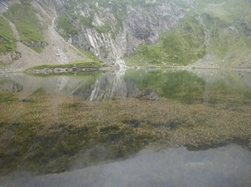
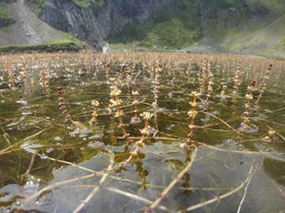

Des d’aquest punt de la vora es poden veure les masses de volantins que hi ha a l’aigua.
Els volantins són unes plantes aquàtiques que durant els mesos d’estiu formen unes inflorescències que sobresurten de la superfície de l’aigua.
El seu nom científic és Myriophyllum, que vol dir “que té milers de branques”. Efectivament, és una planta molt ramificada i les seves tiges formen una espècie de plomalls. Per aprendre a distingir i saber més les diferents plantes aquàtiques que es troben als estanys, cliqueu aquí.